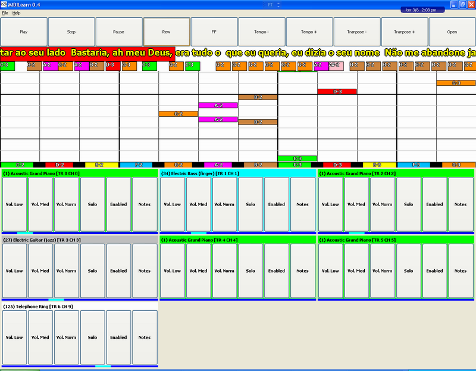

http://sourceforge.net/projects/midilearn/
Win32 installer
version 0.4 - binary
source
version 0.4 - on sourceforge SVN
| RangelReale.com |
|
MIDILearn http://sourceforge.net/projects/midilearn/ |
|
MidiLearn is a program to learn how to play music without needing to know how to read a score. Using common MID or KAR files, one of the tracks is muted and displayed in a custom piano roll view created to be easy and fast to read. |
|
 |
| Downloads |
|
Win32 installer version 0.4 - binary source version 0.4 - on sourceforge SVN |
| Contact |
|
rreale at bol dot com dot br
|
|
|